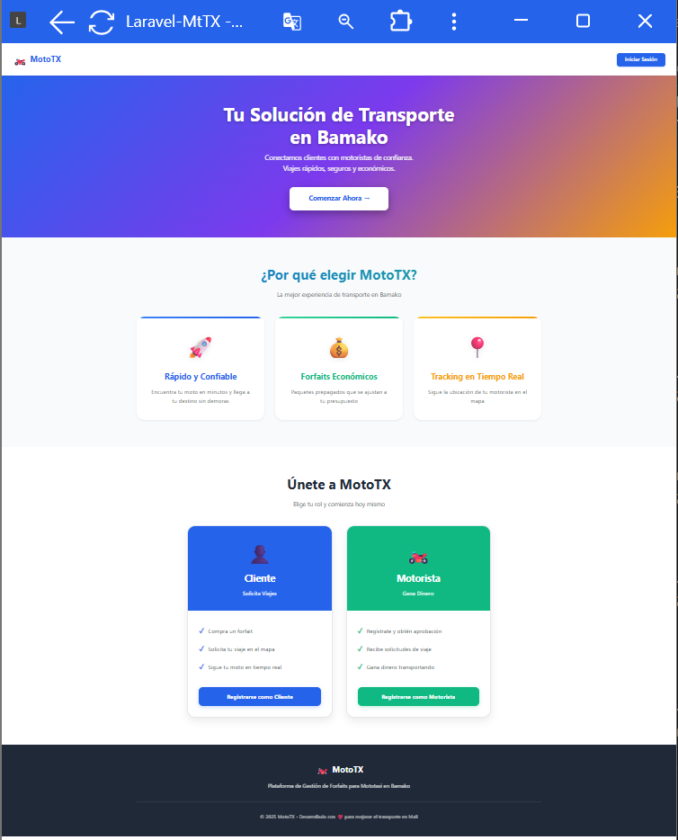
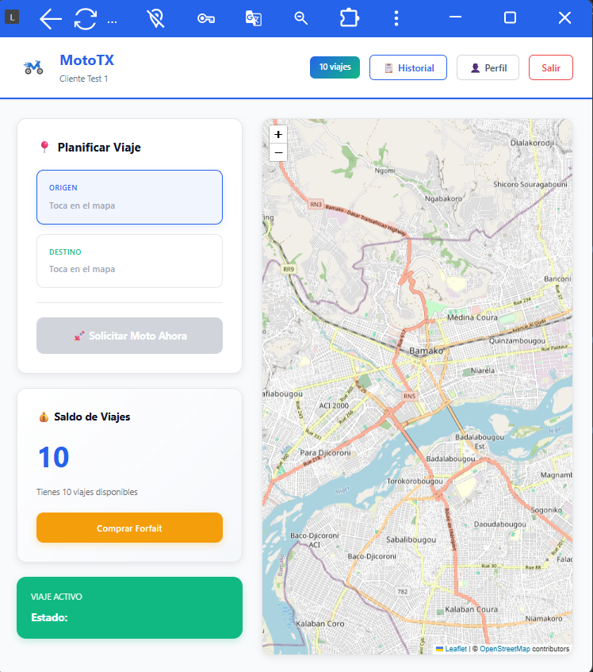
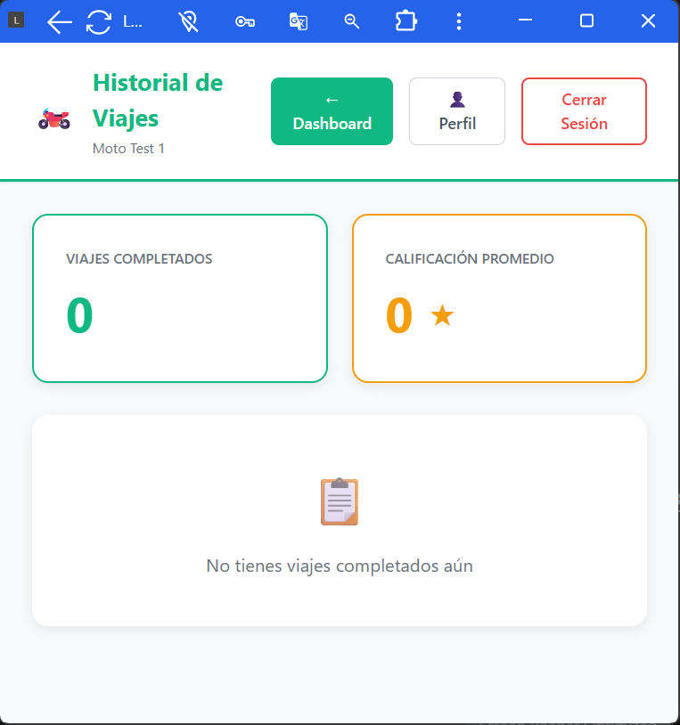
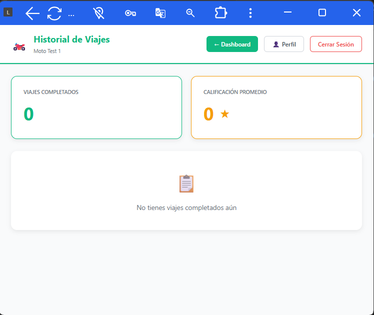

URBAN MOBILITY MALI
MotoTX
La Revolución del Transporte en Bamako
MotoTX no es solo una app; es una infraestructura digital
diseñada para profesionalizar el sector del transporte informal en Mali.

La Misión
Digitalización con Impacto Social
Seguridad 100%
- Identificación KYC de motoristas.
- Trazabilidad GPS en tiempo real.
- Botón de pánico integrado.
Economía Digital
- Integración Orange Money Mali.
- Sistema de Forfaits prepago.
- Billeteras digitales seguras.
Contexto: Bamako depende de las motos para el 80% de sus desplazamientos. MotoTX
aporta
orden, seguridad y modernidad a este ecosistema.
SYSTEM DESIGN
Arquitectura del Sistema
Monolito Moderno con UI Atómica
Utilizamos un enfoque de Monolito Moderno: backend robusto en Laravel
integrado con una arquitectura Frontend Atómica en React.
/backend
├── app/
├── resources/js/
├── routes/api/
└── vite.config.js
Evolución: Hemos migrado de vistas rígidas a un ecosistema de componentes
desacoplados, manteniendo la simplicidad operativa de un monorepo controlado por Vite.
FRONTEND ECOSYSTEM
Estructura Frontend
Organización Atómica y Escalable
Ubicado en /backend/resources/js/, nuestro frontend sigue un estándar de organización de
alto nivel.
/js
├── components/
├── context/
├── hooks/
├── pages/
└── App.jsx
Esta estructura permite al frontend crecer de manera modular, permitiendo a múltiples
desarrolladores trabajar en diferentes roles sin conflictos de arquitectura.
BACKEND MASTERY
Patrón "Service Layer"
Separación de Responsabilidades
Nuestros controladores son "delgados"; la verdadera lógica de negocio reside en Servicios puros.
Request (JSON)
→
Controller
→
Service Layer
→
Eloquent Models
Mantenibilidad
Los cambios de reglas de negocio afectan únicamente al Servicio, no a la API.
Transacciones
Uso de DB::transaction para asegurar la atomicidad de los pagos.
BACKEND MASTERY
Excelencia API REST
Coherencia y Tipado
Toda la comunicación entre React y Laravel sigue un estándar estricto de respuestas JSON.
{
"status": "success",
"data": { ... },
"message": "Operación completada"
}
Usamos códigos HTTP semánticos (201 Created, 403 Forbidden, 422 Unprocessable Content)
para una integración robusta.
SECURITY
Seguridad & JWT
Autenticación Stateless
Implementación de JSON Web Tokens para una comunicación segura y escalable entre
UI y Servidor.
Login
→
Server (Tymon JWT)
→
Access Token (HS256)
- Middleware jwt.auth protege todas las rutas de cliente y motorista.
- El token viaja en el Header Authorization: Bearer.
- Eliminamos el estado de sesión en el servidor para un mejor rendimiento.
SECURITY
Control de Acceso (RBAC)
Rutas Protegidas en la UI
El cliente nunca puede ver el panel de administración, y el motorista accede únicamente a su
terminal de trabajo.
<ProtectedRoute role="admin">
<AdminDashboard />
</ProtectedRoute>
Nuestra UI es inteligente: valida los "claims" del token antes de renderizar los componentes
críticos, doblando la seguridad del backend.
DATABASE DESIGN
Modelo de Datos
Integridad Relacional
Viajes (Trips)
- Relación
User-Client.
- Relación
User-Driver.
- Estados: Solicitado, Aceptado, Completado.
Economía
- Tabla
Forfaits vinculada a créditos.
- Historial de pagos inmutable.
BUSINESS LOGIC
Algoritmo de Tarifas
Gobernanza de Precios
Sistema dinámico de cálculo de costes basado en la política de Forfaits prepago.
Demanda
→
Validar Saldo
→
Debitar "Uso"
→
Confirmar
El sistema asegura que ningún viaje comience sin una transacción atómica previa, protegiendo
los ingresos del motorista.
FRONTEND EXCELLENCE
Sistema de Diseño Atómico
De Estilos Inline a Componentes Reutilizables
Hemos evolucionado de una estructura monolítica visual a un Sistema Atómico
basado en componentes independientes.
Átomos y Moléculas
Componentes Card, Button y Badge que encapsulan
lógica y estilo.
Coherencia Global
Un cambio en el átomo de color primario impacta positivamente toda la plataforma.
FRONTEND EXCELLENCE
Rendimiento en Redes 3G
Optimización para Mali
Nuestra audiencia principal utiliza conexiones limitadas; optimizamos cada byte.
Asset Bundling
Vite + Terser para una minificación extrema.
Lazy Loading
Carga de componentes bajo demanda para reducir el TTI.
FRONTEND EXCELLENCE
Psicología UX
Diseño "One-Hand"
En el caos de Bamako, la interfaz del motorista debe ser infalible y rápida.
Ley de Fitts
Botones críticos en la zona de acción natural del pulgar.
Feedback Háptico
Micro-interacciones para confirmar acciones sin mirar la pantalla.
REACT ENGINE
Gestión de Estado Global
Context API & Auth Provider
Implementamos un proveedor centralizado para heredar el estado de autenticación y los datos
de usuario sin "prop drilling".
AuthContext
Mantiene el Token JWT y el objeto User reactivamente.
Persistencia
Sincronización automática con LocalStorage para sesiones persistentes.
REACT ENGINE
Lógica Reutilizable
Patrón Custom Hooks
Abstraemos la lógica compleja de geolocalización y APIs en Hooks personalizados para un
código más limpio.
UI Component
→
useGeolocation()
→
Live Coords
COMPLIANCE
Seguridad y Normas
Cumplimiento Legal Integrado
🛡️ RGPD / Privacidad
- Derecho al Olvido: Eliminación de cuenta con Soft Delete
(Integridad de datos) + Anonimización (Pruébalo en el Perfil).
- Consentimiento: Casilla explícita en el registro.
♿ Accesibilidad (WCAG)
- Modo Dislexia: Fuente OpenDyslexic disponible globalmente.
- Contraste: Validado > 4.5:1.
- Atributos ARIA: Navegación semántica.
PUBLIC VIEW
Plataforma Pública
Primeros Pasos del Usuario
Diseño enfocado en la conversión y la simplicidad (Landing y Registro).

Registro Roles Dobles
El sistema detecta automáticamente el rol para aplicar reglas de validación específicas durante
el onboarding.
CLIENT EXPERIENCE
Dashboard & Geocodificación
Planificación Inteligente
Interfaz reactiva con integración de la API Nominatim para la búsqueda de
direcciones
en tiempo real.

- Búsqueda Textual: Convertimos direcciones en coordenadas geográficas.
- ETA dinámico: Cálculo de tiempo estimado (Haversine) antes de pedir.
- Validación Visual: Los puntos se confirman con badges interactivos.
SMART MOBILITY
Zonas y Restricciones
Gobernanza Geográfica
Implementamos un sistema de Validación Proactiva basado en el alcance de los
Forfaits
contratados.
Trayecto (km)
→
Validador de Alcance
→
Bloqueo / Petición
- Zonificación: Diferenciación entre Pack Urbano (5km) y Pack Transversal
(Ilimitado).
- Seguridad Económica: Evitamos el uso abusivo de paquetes económicos
en largas distancias.
- Alertas Usuario: Feedback visual con animaciones de advertencia cuando se
supera el límite.
CLIENT EXPERIENCE
Ecosistema de Pagos
Forfaits & Gestión Financiera
Solución innovadora al problema del cambio físico mediante créditos de viaje digitales.

Catálogo de Planes
FINTECH INTEGRATION
Webhooks Orange Money
Pagos Asíncronos
Gestión segura de confirmaciones vía Endpoints para evitar el fraude.
App Orange
→
Callback API
→
Verificar Firma
→
Liberar Créditos
DRIVER EXPERIENCE
Espacio del Motorista
Productividad Móvil
Interfaz de alta velocidad diseñada para uso con una mano en movimiento.

- Interruptor de disponibilidad "En Línea".
- Geolocalización persistente vía Navigator.geolocation.
- Alertas instantáneas de nuevos trayectos cercanos.
DRIVER EXPERIENCE
Control de Ingresos
Transparencia y Crecimiento

Historial de Ganancias

Gestión de Vehículo
ADMIN CONTROL
Torre de Control
Visibilidad Total 360°
ADMIN CONTROL
Auditoría & Anti-Fraude
Trazabilidad de Operaciones
Cada acción crítica (validación chofer, supresión usuario) genera una traza inmutable.
[2024-05-20 10:15] ADMIN_01 validó MOTORISTA_44
[2024-05-20 11:30] SYSTEM detectó FALLO_RECARGA vía Orange Money
Implementamos un sistema de Logs de Actividad que permite reconstruir cualquier
incidente financiero en segundos.
ADMIN CONTROL
Gestión Granular
DEVOPS & SECURITY
Variables de Entorno
Gestión de Secretos
Protección total de credenciales sensibles vía inyección de .env.
JWT_SECRET=****************
APP_KEY=base64:*************
Separamos la configuración del código, permitiendo despliegues seguros en cualquier
ambiente (Dev, Staging, Prod).
DEPLOYMENT
Despliegue y Acceso
Exposición Local Segura
Nuestra infraestructura permite pruebas en dispositivos reales sin servidor remoto costoso.
php artisan serve --host=0.0.0.0 --port=8000
.\cloudflared.exe tunnel --url http://localhost:8000
Cloudflare Tunnels: Crea un puente seguro SSL entre tu máquina local y el
mundo exterior para demos en vivo.
QUALITY ASSURANCE
Tests y QA
Validación End-to-End
MotoTX ha sido probado bajo condiciones reales de red para asegurar su fiabilidad.
Testing Manual
Simulación de trayectos en dispositivos móviles físicos.
Edge Cases
Gestión de pérdida de señal y reconexión automática.
GLOBAL READY
Internacionalización (i18n)
Soporte Multi-idioma Modular
La plataforma está diseñada para el mercado global, comenzando por Bamako con un soporte robusto.
Motor i18next
Gestión reactiva de diccionarios JSON (Español, Francés, Bambara).
Localización Dinámica
Cambio de idioma instantáneo sin recargar la aplicación.
Usamos el hook useTranslation para asegurar que cada botón y alerta sea
accesible.
LIVE DEMO (BACKUP)
Demos en Acción
Funcionalidades Críticas en Tiempo Real
Grabaciones de seguridad demostrando la robustez de los flujos principales.
Multi-idioma (i18n)

Movilidad Inteligente

Pagos Digitales

Conclusión y Futuro
Escalabilidad e Impacto
Escalable
Arquitectura lista para la expansión a nivel nacional.
Innovador
Primer sistema de forfaits digitales en el sector moto-taxi.
GRACIAS
¿Preguntas técnicas?